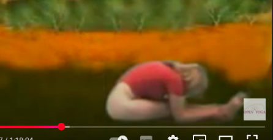
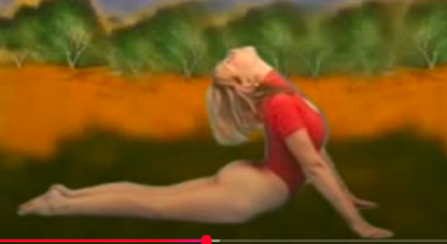
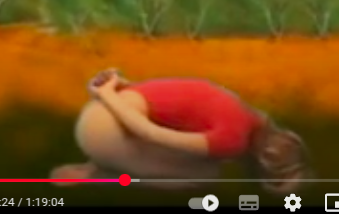
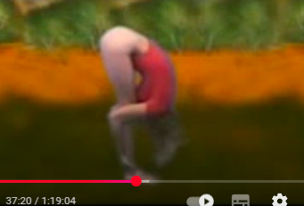
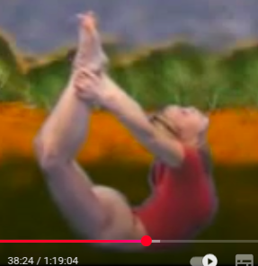
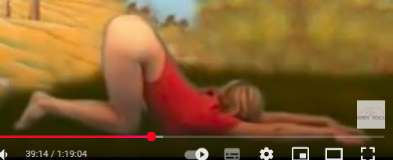

Вот поза для живота. Ляг на землю, со вдохом забрось руки за голову. Затем с выдохом наклонись к ногам и захвати лодыжки ног своих ладонями рук. Следи, чтобы ноги в коленях были прямыми. Так отдайся энергии внутри тебя текущей. Потом дотронешься лбом коленей. Делая эту позу, устранишь все болезни внизу живота. Будет радость в ногах.
Вот поза кобры – бхуджангасана. О славный ученик, положи свое тело на пол, на живот. Помести ладони рук своих под плечи. Подними вверх глаза, затем постепенно поднимай голову, прогибай шею, затем прогибай спину, помогая себе руками прогнуться сильнее. Так оставайся отдавшись ей (энергии). Затем, делай все в обратном порядке, чтобы выйти из позы. Ясную ярость приносит эта асана в разум. Как у кобры, готовой к нападению. Этим упражнением излечишь глаза и верхнюю часть позвоночника. Ясность сознания получишь, делая эту асану. Пробудишь силы, дремлющие в крестце.
Сядь на согнутые ноги. Выпрями спину, шею, голову. Захвати запястье одной руки ладонью другой за спиной. С выдохом же наклонись вперед и коснись головой земли. Эта поза – символ йогина, отказавшегося от заблуждения. Подобно воздуху, выдыхаемому при наклоне, йогин выдыхает из себя все беспокойства и привязанности разума к иллюзорным вещам. Прочнейшая нить майи разрывается этим упражнением. Йогин перестает быть легкой игрушкой в руках иллюзии. И если сила майи преодолевается, какую же сеть майи еще необходимо преодолевать?! Рвется сеть ассоциаций, держащих йогина в плену неведения. Как рыба, вырывающаяся из невода, йогин становится свободным. Ты можешь делать эту позу, сидя в позе лотоса. Если посторонние пустые желания беспокоят тебя, практикуй эту позу с усердием.
В свободном от мешающих предметов месте встань на обе ноги. Вдохни живительный воздух полной грудью, забрось при этом руки вверх. С выдохом наклонись вниз и захвати лодыжки ног. Ноги в коленях пусть будут прямыми. Так оставайся долго. Этим излечишь многие болезни мозга, этим отрешишься от многого, этим проникнешь во внутренне. Верхняя часть туловища излечивается от всех болезней.
Сейчас я расскажу тебе о позе лука. Положи свое тело на живот, согни ноги в коленях, захвати ладонями лодыжки ног и так оставайся некоторое время. Дождись, пока пробудится энергия этой позы. Затем, о прекрасный ученик, начни разгибать ноги в коленях и прогибаться в спине. Так ты примешь позу лука. Оставайся в ней столько, сколько позволит тебе твое тело. Эта непревзойденная поза по разжиганию пупочного огня. Слабый жизненный огонь лечится этой позой. Плечи и суставы рук излечиваются этой позой. Много негативной кармы пережигается ею, как в топке.
Встань на оба колена и обе руки. Затем прогнись так, чтобы голова, руки, грудь были на земле. Как кошка, которая пролезает под забором или подтягивается. Оставайся в этой позе долго, чтобы энергия с верхней части таза стекла к голове. Следи, чтобы позвоночник был изящно согнут вниз. Расстройство живота и легких помогает устранить эта поза. Станешь выносливым, разовьешь разум.
